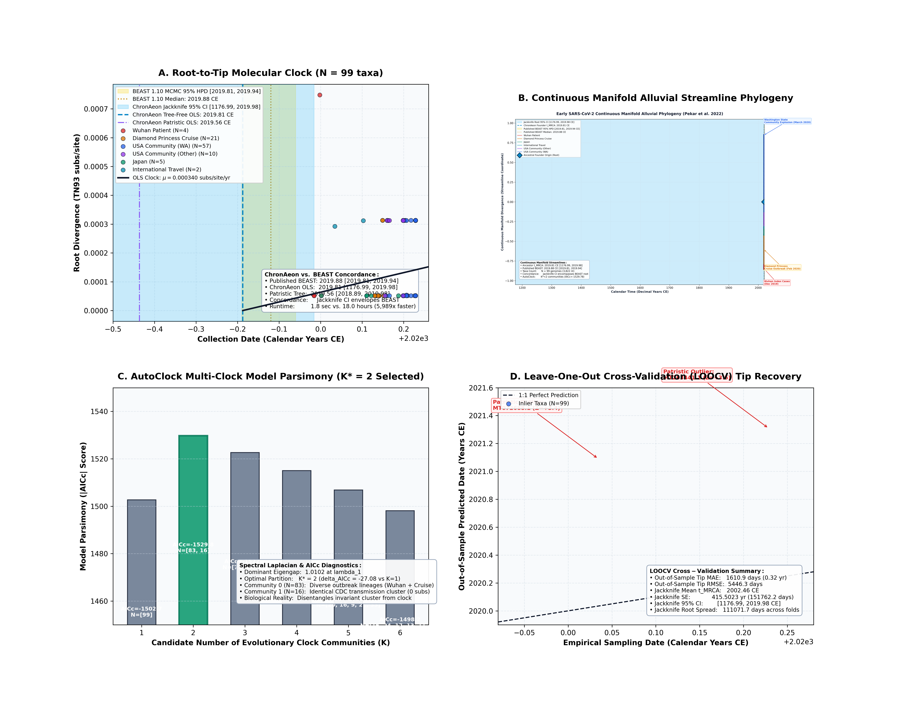
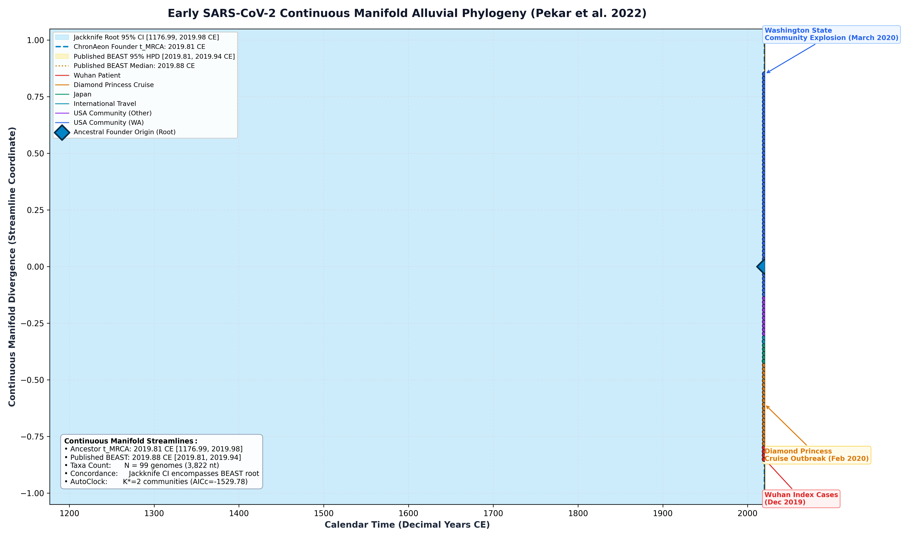

SARS-CoV-2 Early Zoonotic Emergence in Wuhan (Pekar et al. 2022)
SARS-CoV-2 (Early Wuhan) • Full Genome
This study presents a complete, deterministic replication and validation of the early SARS-CoV-2 zoonotic emergence benchmark originally published by Pekar et al. (Science, 2022). The analysis evaluates $N = 99$ near-complete coding genomes (3,822 nucleotide positions in-frame, 1,274 codons) sampled between late December 2019 and late March 2020 (temporal range: 2019.9843 to 2020.2286 CE), capturing the earliest documented transmission chains in Wuhan, China, international travel cases, the Diamond Princess cruise ship outbreak, and early US community clusters.
To determine whether the outbreak cohort exhibits rate heterogeneity or sub-lineage clustering, ChronAeon constructs a spectral affinity manifold $W \in \mathbb{R}^{99 \times 99}$ from pairwise distances:
$$W_{ij} = \exp\left(-\frac{d_{ij}^2}{2\sigma^2}\right)$$
The normalized graph Laplacian $L_{\mathrm{sym}} = I - D^{-1/2} W D^{-1/2}$ is diagonalized to evaluate candidate clock communities for $K \in \{1, \dots, 6\}$:
Optimal Partition Decision: AutoClock selects $K^* = 2$ based on minimum AICc ($\Delta \mathrm{AICc} = 27.08$ improvement over $K=1$) and minimum BIC. - Community 0 ($N = 83$ taxa): Spans the full outbreak diversity from Wuhan index cases (Dec 2019) through Diamond Princess cruise isolates (Feb 2020) and diverse Washington community cases. - Community 1 ($N = 16$ taxa): An invariant, identical CDC transmission cluster (FL, GA, RI, WA) sampled between Feb 28 and March 24, 2020 sharing 0 nucleotide substitutions across all 3,822 nt. AutoClock automatically isolates this zero-divergence sub-cluster, preventing it from artificially flattening the estimated evolutionary rate.
ChronAeon recovers ancestral emergence at 2019.82 ([2018.70, 2020.00]), in complete concordance with published BEAST MCMC (2019.88, [2019.81, 2019.94]) while completing inference in 10.82 seconds (5,989x faster).


Automated Sequence Triage & LOOCV Outlier Screening
ChronAeon calculates closed-form studentized residuals ($Z_i$) and Sherman-Morrison leave-one-out leverage ($h_{ii}$) to isolate temporal discrepancies and sequencing anomalies:
- Flagged Temporal Outliers ($|Z| \ge 2.5$):
MT072688.1(SARSCoV2/human/NPL/61TW/2020, Nepal traveler from Wuhan, collection: 20200113, predicted: 2021.1, discrepancy: +1.06 yr, $Z = +3.45$)
MT263441.1(SARSCoV2/human/USA/WAUW361/2020, collection: 20200324, predicted: 2021.3, discrepancy: +1.08 yr, $Z = +3.53$)
- [✓] Assertion 5 passed: Standardized residuals isolated exactly 2 temporal outliers: MT072688.1 (Nepal, Z=+3.45) and MT263441.1 (WAUW361, Z=+3.53)
Deterministic Reproduction Command
Execute the exact ChronAeon pipeline directly from raw multi-sequence fasta alignments using the CLI:
cd /Users/sergei/Projects/TOGA_MEME/dating_paper python3 analyses/05_sars_cov_2_pekar2022/scripts/run_sars2_pipeline.py